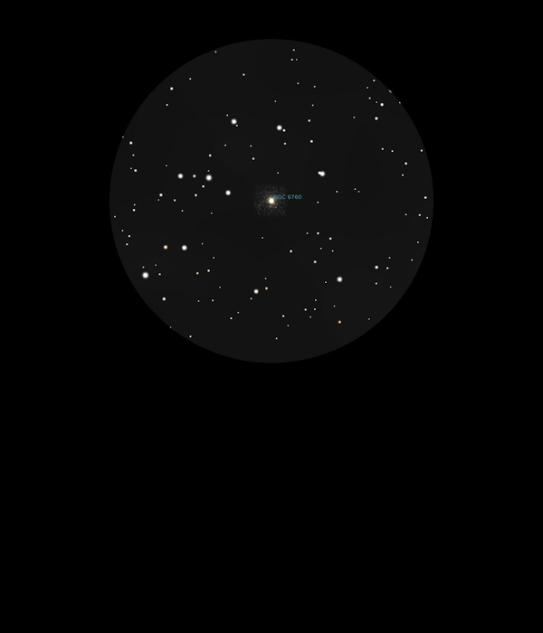

NGC 6760
Globular Cluster in Aquila
NGC 6760
Mag 9.0
GC class IX
06/08/16
Very faint in 25mm and not any better in 12mm, certainly not
resolved but it is a very loose Globular Cluster and only of
Mag 9 so not surprising that it is so faint!
22/08/16
Very faint and completely unresolved Globular Cluster, however
it sits in a very nice FOV in 25mm and forms a triangle
between HIP 94167 at Mag 7.7 and HIP 94276 at Mag 8.8
08/09/16
A very faint Globular Cluster at Mag 9.0, just a small faint
hazy blob in 12mm but pleased that I have located it
Of course no stars resolved but in a nice FOV